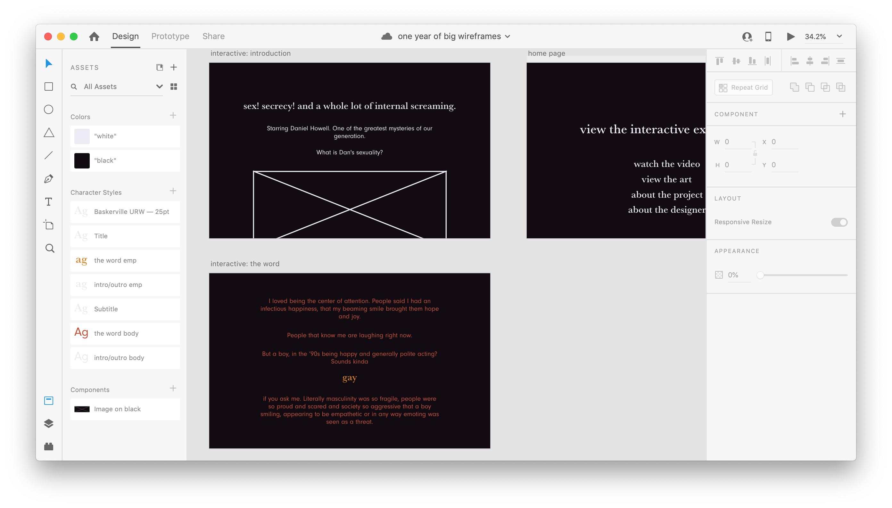

i decided in may that i wanted to do something for the one-year anniversary of this video. i've always liked typography and lettering and i'm not a particularly skilled drawer, so it kind of made sense to something with the video transcript.
at first i was thinking a book, but literally everyone i wanted to share this with wouldn't be able to see it in print. which means i'd put a lot of effort into beautiful typesetting that's going to be distorted and hard-to-read on someone's computer.
and then i remembered the 'coding for visual storytelling' course i took during my last semester of uni. i hadn't done a web project since, but i kind of wanted the challenge.
so this project was born. first in me drawing a lot of random shit on my work iPad with no plan and then realizing i'd have to scrap all of it.
then with choosing colors and fonts using coolors and Adobe Fonts.
Then I designed wireframes in Adobe XD.
I started drawing in Adobe Fresco.
Look, I sold my soul to Adobe at the age of, like, thirteen and I have a personal Creative Cloud subscription.
I also bought an iPad Pro at this point which I had been wanting to do for awhile, but never committed to.
I then wrote the HTML and CSS in Adobe Dreamweaver, published through Github pages, and now you're seeing this site!